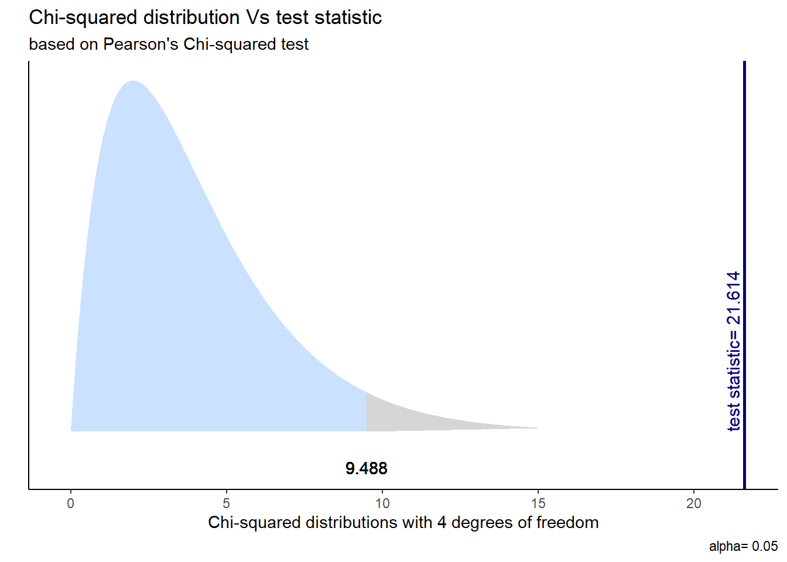
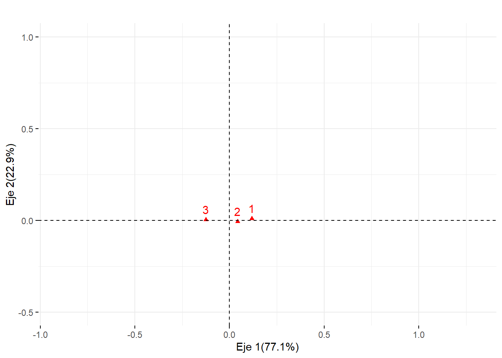
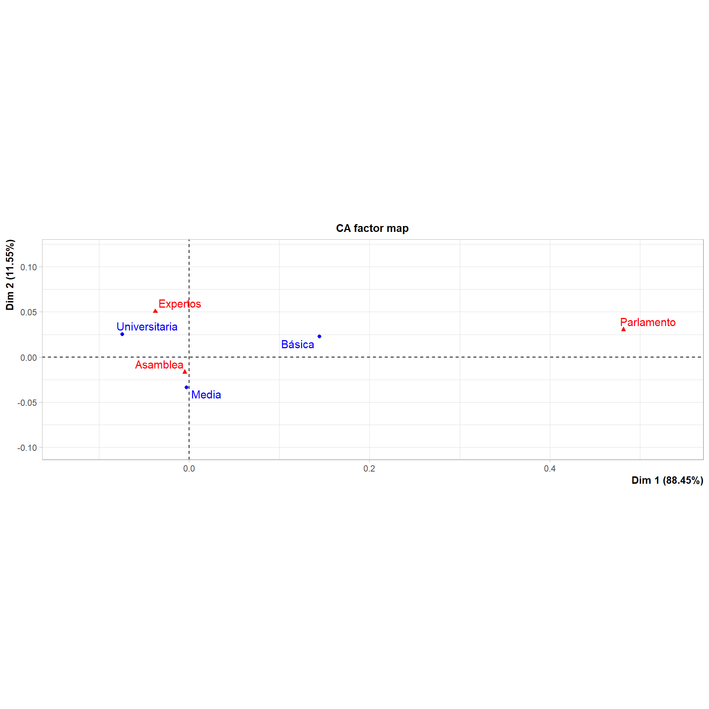

La siguiente práctica tiene el objetivo de introducir la idea central del análisis de correspondencia. Para ello, utilizaremos la base de datos de la cuarta ola del Estudio Longitudinal Social de Chile 2019 con el objetivo de analizar agrupaciones de variables categóricas nominales.
Preparación datos
Comencemos por preparar nuestros datos. Iniciamos cargando las librerías necesarias.
Código
pacman::p_load(tidyverse, # Manipulacion datos sjPlot, # Tablas psych, # Correlaciones DescTools, # Tablas gginference, # Visualizacion rempsyc, # Reporte broom) # Variosoptions(scipen =999) # para desactivar notacion cientificarm(list =ls()) # para limpiar el entorno de trabajo
Cargamos los datos directamente desde internet.
Código
#cargamos la base de datos desde internetload(url("https://dataverse.harvard.edu/api/access/datafile/7245118")) dim(elsoc_long_2016_2022.2)
[1] 18035 750
Contamos con 750 variables (columnas) y 18035 observaciones (filas).
Una tabla de contingencia es una de las maneras más simples y útiles para representar el cruce entre dos variables categóricas.
Con ella, podemos obtener en las celdas las frecuencias conjuntas entre ambas variables, es decir, cuántos casos de una determinada categoría de la variable Y ocurren conjuntamente con una determinada categoría de la variable X.
Además, podemos presentar los totales de cada fila y columna al exterior de la tabla, también conocidas como frecuencias marginales.
Visualicemos la distribución de esta prueba y su zona de rechazo.
Código
ggchisqtest(chi_results)

Análisis de correspondencias simple
Código
pacman::p_load(ade4, FactoMineR, factoextra)
There is a binary version available but the source version is later:
binary source needs_compilation
RcppArmadillo 14.0.2-1 14.2.0-1 TRUE
Binaries will be installed
package 'pixmap' successfully unpacked and MD5 sums checked
package 'sp' successfully unpacked and MD5 sums checked
package 'RcppArmadillo' successfully unpacked and MD5 sums checked
package 'ade4' successfully unpacked and MD5 sums checked
The downloaded binary packages are in
C:\Users\danie\AppData\Local\Temp\Rtmp88h1j1\downloaded_packages
package 'crosstalk' successfully unpacked and MD5 sums checked
package 'DT' successfully unpacked and MD5 sums checked
package 'ellipse' successfully unpacked and MD5 sums checked
package 'flashClust' successfully unpacked and MD5 sums checked
package 'leaps' successfully unpacked and MD5 sums checked
package 'multcompView' successfully unpacked and MD5 sums checked
package 'scatterplot3d' successfully unpacked and MD5 sums checked
package 'FactoMineR' successfully unpacked and MD5 sums checked
The downloaded binary packages are in
C:\Users\danie\AppData\Local\Temp\Rtmp88h1j1\downloaded_packages
package 'dendextend' successfully unpacked and MD5 sums checked
package 'factoextra' successfully unpacked and MD5 sums checked
The downloaded binary packages are in
C:\Users\danie\AppData\Local\Temp\Rtmp88h1j1\downloaded_packages
#Nube de individuos columnafviz_ca_col(ACS)+ggtitle("")+ylab("Eje 2(11.55%)")+xlab("Eje 1(88.45%)")+ylim(-0.5,.5)+xlim(-0.5,.5)

Código
#Representación simultáneaplot.CA(ACS)

Ejecutar el código
---title: "Análisis de correspondencia simple"date: "2024-08-28"lang: esoutput: number_sections: true---```{r setup, include=FALSE}knitr::opts_chunk$set(echo =TRUE, message =FALSE,warning =FALSE)```# Objetivo de la prácticaLa siguiente práctica tiene el objetivo de introducir la idea central del análisis de correspondencia. Para ello, utilizaremos la base de datos de la cuarta ola del Estudio Longitudinal Social de Chile 2019 con el objetivo de analizar agrupaciones de variables categóricas nominales.# Preparación datosComencemos por preparar nuestros datos. Iniciamos cargando las librerías necesarias.```{r librerias, collapse=TRUE}pacman::p_load(tidyverse, # Manipulacion datos sjPlot, # Tablas psych, # Correlaciones DescTools, # Tablas gginference, # Visualizacion rempsyc, # Reporte broom) # Variosoptions(scipen =999) # para desactivar notacion cientificarm(list =ls()) # para limpiar el entorno de trabajo```Cargamos los datos directamente desde internet.```{r datos}#cargamos la base de datos desde internetload(url("https://dataverse.harvard.edu/api/access/datafile/7245118")) dim(elsoc_long_2016_2022.2)```Contamos con 750 variables (columnas) y 18035 observaciones (filas).```{r}proc_data <- elsoc_long_2016_2022.2%>%filter(ola=="4") %>%select(c29, # Confianza generalizada m01# nivel educacional )proc_data <- proc_data %>% sjlabelled::set_na(., na =c(-999, -888, -777, -666))# Comprobarnames(proc_data)proc_data$educacion <- car::recode(proc_data$m01, "c(1,2,3)=1; c(4,5)=2; c(6,7,8,9,10)=3")proc_data$educacion <- sjlabelled::set_labels(proc_data$educacion,labels=c( "Educación básica"=1,"Educación media"=2,"Educación superior"=3))sjmisc::frq(proc_data$educacion)```# Tablas de contingenciaUna tabla de contingencia es una de las maneras más simples y útiles para representar el cruce entre dos variables categóricas.Con ella, podemos obtener en las celdas las frecuencias **conjuntas** entre ambas variables, es decir, cuántos casos de una determinada categoría de la variable Y ocurren conjuntamente con una determinada categoría de la variable X. Además, podemos presentar los totales de cada fila y columna al exterior de la tabla, también conocidas como frecuencias **marginales**.Veamos un ejemplo con `ss_salud` y `universitaria`:```{r}sjPlot::sjt.xtab(var.row = proc_data$educacion, var.col = proc_data$c29, show.summary = F, emph.total = T, encoding ="UTF-8")```Sumado a esto, tenemos:- _Frecuencias absolutas_: números que aparencen en la tabla (ya sean conjuntas o marginales)- _Frecuencias relativas_: * porcentaje fila: % que cada frecuencia conjunta representa sobre la marginal de su fila * porcentaje columna: % que cada frecuencia conjunta representa sobre la marginal de su columna * porcentaje total: % que cada frecuencia conjunta representa sobre el número total de casos de la tablaVeamos cómo incorporar el porcentaje fila y columna en la tabla.```{r}sjPlot::sjt.xtab(var.row = proc_data$educacion, var.col = proc_data$c29, show.summary = F, emph.total = T, show.row.prc = T, # porcentaje filashow.col.prc = T, # porcentaje columnaencoding="UTF-8")```Aquí, los porcentajes fila aparecen en azul y los porcentajes columna en verde. # Prueba de hipótesis con Chi-cuadradocálculo directo en R:```{r, collapse=TRUE}chi_results <-chisq.test(table(proc_data$educacion, proc_data$c29))stats.table <-tidy(chi_results, conf_int = T)nice_table(stats.table)```Visualicemos la distribución de esta prueba y su zona de rechazo.```{r}ggchisqtest(chi_results)```# Análisis de correspondencias simple```{r}pacman::p_load(ade4, FactoMineR, factoextra)``````{r}proc_data <- proc_data %>%select(-m01)tabla <-prop.table(table(proc_data$educacion, proc_data$c29))dimnames(tabla) <-list(educacion=c("Básica", "Media", "Universitaria"),constitucion=c("Expertos", "Parlamento", "Asamblea") )tablachisq.test(tabla)ACS <-CA(tabla, ncp=2, graph =FALSE)``````{r}#Perfiles filavariables_fila=get_ca_row(ACS)variables_fila$inertia#Nube de individuos filafviz_ca_row(ACS, repel =TRUE)+ggtitle("") +ylab("Eje 2(11.55%)")+xlab("Eje 1(88.45%)")+ylim(-0.5,.5)+xlim(-.5,.5)``````{r}#Perfiles columnavariables_columna=get_ca_col(ACS)variables_columna$inertia#Nube de individuos columnafviz_ca_col(ACS)+ggtitle("")+ylab("Eje 2(11.55%)")+xlab("Eje 1(88.45%)")+ylim(-0.5,.5)+xlim(-0.5,.5)``````{r fig.width=10, fig.height=10}#Representación simultáneaplot.CA(ACS)``````{r eval=FALSE, echo=FALSE}coords_filas <- ACS$row$coordcoords_triangulo <- coords_filas[c("Básica", "Media", "Universitaria"), ]triangulo_df <-data.frame(x = coords_triangulo[, 1], # Coordenadas de la Dimensión 1y = coords_triangulo[, 2], # Coordenadas de la Dimensión 2Categoria =rownames(coords_triangulo))# Añadir el primer punto al final para cerrar el triángulotriangulo_df <-rbind(triangulo_df, triangulo_df[1, ])# Crear el gráfico del triánguloggplot(triangulo_df, aes(x = x, y = y, label = Categoria)) +geom_polygon(aes(group =1), fill ="lightblue", color ="blue", alpha =0.5) +geom_point(color ="red", size =3) +geom_text(vjust =-1, hjust =0.5, size =5) +geom_segment(aes(x =0, y =0, xend = x, yend = y), linetype ="dashed", color ="gray") +coord_fixed(ratio =1) +labs(x ="Dimensión 1", y ="Dimensión 2", title ="Triángulo basado en el Análisis de Correspondencia") +theme_minimal()```